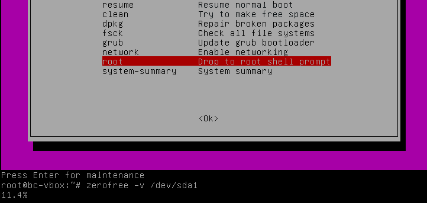

VirtualBox VM/虚拟机：Windows 系统虚拟硬盘扩大容量，压缩磁盘上内容
- 参考
Windows 7
删除无用文件
删除补丁安装包
C:\Windows\SoftwareDistribution\DataStore 和 C:\Windows\SoftwareDistribution\Download 下的所有文件。
Windows磁盘清理
右键菜单 C盘 》常规 》磁盘清理 》清理系统文件 》全选“要删除的文件” 》点击“确定”
“System Volume Information” 文件夹
System Volume Information 文件夹占用很大磁盘空间， contains your system restore points.
- 关闭系统还原点功能
- 控制面板 》系统和安全 》系统 》系统保护 》弹出“系统保护”设置对话框
- 选择“C:”盘 》 配置
- 点按钮“删除” 》删除所有还原点
- 选择“关闭系统保护” 》 确定
删除temp文件夹内容
Windows 下的temp目录：
Windows Vista, 7, 8, 8.1, and 10:
C:\Users<user>\AppData\Local\Temp
C:\Users<user>\AppData\Local\Microsoft\Windows\Temporary Internet Files
C:\Windows\Temp
C:\Temp
Chrome Cache
1 2 | cd /cygdrive/c/Users/your-username du -sh AppData/Local/Google/Chrome; du -sh AppData/Roaming/Google/Chrome |
设置 》更多工具 》清楚浏览数据 》勾选“缓存的图片和文件” 》点击清除
Firefox Cache
Option -> Privacy & Security -> Cookies and Site Data -> Clear Data…
windows临时文件清理脚本
powershell脚本，按如下步骤启动：
- 以管理员方式启动
powershell - 执行
set-ExecutionPolicy RemoteSigned来执行下载对未签名脚本。
- 脚本参考：
- POWERSHELL TO AUTOMATE DISK CLEANUP
DiskCleanUp.ps1感觉没啥效果 - Clean up your C: Drive
Start-Cleanup.ps1有效果，干掉1G对垃圾文件 - github - xepin/Windows-Cleaner-Tools
- POWERSHELL TO AUTOMATE DISK CLEANUP
Start-Cleanup.ps1
1 2 3 4 5 6 7 8 9 10 11 12 13 14 15 16 17 18 19 20 21 22 23 24 25 26 27 28 29 30 31 32 33 34 35 36 37 38 39 40 41 42 43 44 45 46 47 48 49 50 51 52 53 54 55 56 57 58 59 60 61 62 63 64 65 66 67 68 69 70 71 72 73 74 75 76 77 78 79 80 81 82 83 84 85 86 87 88 89 90 91 92 93 94 95 96 97 98 99 100 101 102 103 104 105 106 107 108 | Function Cleanup { <# .CREATED BY: Matthew A. Kerfoot .CREATED ON: 10\17\2013 .Synopsis Aautomate cleaning up a C: drive with low disk space .DESCRIPTION Cleans the C: drive's Window Temperary files, Windows SoftwareDistribution folder, ` the local users Temperary folder, IIS logs(if applicable) and empties the recycling bin. ` All deleted files will go into a log transcript in C:\Windows\Temp\. By default this ` script leaves files that are newer than 7 days old however this variable can be edited. .EXAMPLE PS C:\Users\mkerfoot\Desktop\Powershell> .\cleanup_log.ps1 Save the file to your desktop with a .PS1 extention and run the file from an elavated PowerShell prompt. .NOTES This script will typically clean up anywhere from 1GB up to 15GB of space from a C: drive. .FUNCTIONALITY PowerShell v3 #> function global:Write-Verbose ( [string]$Message ) # check $VerbosePreference variable, and turns -Verbose on { if ( $VerbosePreference -ne 'SilentlyContinue' ) { Write-Host " $Message" -ForegroundColor 'Yellow' } } $VerbosePreference = "Continue" $DaysToDelete = 1 $LogDate = get-date -format "MM-d-yy-HH" $objShell = New-Object -ComObject Shell.Application $objFolder = $objShell.Namespace(0xA) $ErrorActionPreference = "silentlycontinue" Start-Transcript -Path C:\Windows\Temp\$LogDate.log ## Cleans all code off of the screen. Clear-Host $size = Get-ChildItem C:\Users\* -Include *.iso, *.vhd -Recurse -ErrorAction SilentlyContinue | Sort Length -Descending | Select-Object Name, @{Name="Size (GB)";Expression={ "{0:N2}" -f ($_.Length / 1GB) }}, Directory | Format-Table -AutoSize | Out-String $Before = Get-WmiObject Win32_LogicalDisk | Where-Object { $_.DriveType -eq "3" } | Select-Object SystemName, @{ Name = "Drive" ; Expression = { ( $_.DeviceID ) } }, @{ Name = "Size (GB)" ; Expression = {"{0:N1}" -f( $_.Size / 1gb)}}, @{ Name = "FreeSpace (GB)" ; Expression = {"{0:N1}" -f( $_.Freespace / 1gb ) } }, @{ Name = "PercentFree" ; Expression = {"{0:P1}" -f( $_.FreeSpace / $_.Size ) } } | Format-Table -AutoSize | Out-String ## Stops the windows update service. Get-Service -Name wuauserv | Stop-Service -Force -Verbose -ErrorAction SilentlyContinue ## Windows Update Service has been stopped successfully! ## Deletes the contents of windows software distribution. Get-ChildItem "C:\Windows\SoftwareDistribution\*" -Recurse -Force -Verbose -ErrorAction SilentlyContinue | remove-item -force -Verbose -recurse -ErrorAction SilentlyContinue ## The Contents of Windows SoftwareDistribution have been removed successfully! ## Deletes the contents of the Windows Temp folder. Get-ChildItem "C:\Windows\Temp\*" -Recurse -Force -Verbose -ErrorAction SilentlyContinue | Where-Object { ($_.CreationTime -lt $(Get-Date).AddDays(-$DaysToDelete)) } | remove-item -force -Verbose -recurse -ErrorAction SilentlyContinue ## The Contents of Windows Temp have been removed successfully! ## Delets all files and folders in user's Temp folder. Get-ChildItem "C:\users\*\AppData\Local\Temp\*" -Recurse -Force -ErrorAction SilentlyContinue | Where-Object { ($_.CreationTime -lt $(Get-Date).AddDays(-$DaysToDelete))} | remove-item -force -Verbose -recurse -ErrorAction SilentlyContinue ## The contents of C:\users\$env:USERNAME\AppData\Local\Temp\ have been removed successfully! ## Remove all files and folders in user's Temporary Internet Files. Get-ChildItem "C:\users\*\AppData\Local\Microsoft\Windows\Temporary Internet Files\*" ` -Recurse -Force -Verbose -ErrorAction SilentlyContinue | Where-Object {($_.CreationTime -le $(Get-Date).AddDays(-$DaysToDelete))} | remove-item -force -recurse -ErrorAction SilentlyContinue ## All Temporary Internet Files have been removed successfully! ## Cleans IIS Logs if applicable. Get-ChildItem "C:\inetpub\logs\LogFiles\*" -Recurse -Force -ErrorAction SilentlyContinue | Where-Object { ($_.CreationTime -le $(Get-Date).AddDays(-60)) } | Remove-Item -Force -Verbose -Recurse -ErrorAction SilentlyContinue ## All IIS Logfiles over x days old have been removed Successfully! ## deletes the contents of the recycling Bin. ## The Recycling Bin is now being emptied! $objFolder.items() | ForEach-Object { Remove-Item $_.path -ErrorAction Ignore -Force -Verbose -Recurse } ## The Recycling Bin has been emptied! ## Starts the Windows Update Service ##Get-Service -Name wuauserv | Start-Service -Verbose $After = Get-WmiObject Win32_LogicalDisk | Where-Object { $_.DriveType -eq "3" } | Select-Object SystemName, @{ Name = "Drive" ; Expression = { ( $_.DeviceID ) } }, @{ Name = "Size (GB)" ; Expression = {"{0:N1}" -f( $_.Size / 1gb)}}, @{ Name = "FreeSpace (GB)" ; Expression = {"{0:N1}" -f( $_.Freespace / 1gb ) } }, @{ Name = "PercentFree" ; Expression = {"{0:P1}" -f( $_.FreeSpace / $_.Size ) } } | Format-Table -AutoSize | Out-String ## Sends some before and after info for ticketing purposes Hostname ; Get-Date | Select-Object DateTime Write-Verbose "Before: $Before" Write-Verbose "After: $After" Write-Verbose $size ## Completed Successfully! Stop-Transcript } Cleanup |
压缩和整理磁盘空间
Windows 7 中压缩磁盘内容
- 资源管理器中右键点击磁盘（如C:），右键菜单选择属性
- “常规选”项卡 -》磁盘清理
- “工具选”项卡 -》碎片整理
sdelete
- https://technet.microsoft.com/en-us/sysinternals/bb897443
- https://docs.microsoft.com/zh-cn/sysinternals/downloads/sdelete
删除的文件其实还在虚拟硬盘中，只有将内容全写0，VirtualBox才能真正压缩。
sdelete 就是干写0的事情的。
This will write zeros to all the free disk space on drive C:.
As the SDelete page on Microsoft’s website notes, the -z option is “good for virtual disk optimization”.
1 | sdelete.exe c: -z |
执行完上述操作然后关机。再运行 VBoxManage 来 compact disk 试试。
VBoxManage modifymedium disk your-disk-file.vdi --compact
从40155 MB压缩到了 40124 MB，效果一般。只对vdi格式虚拟磁盘文件有效。
1 | >VBoxManage modifymedium disk win7x86.vdi --compact |
Ubuntu 18.04
清理系统
清理安装包
- apt/apt-get clean → cleans the packages and install script in /var/cache/apt/archives/
- apt/apt-get autoclean → cleans obsolete deb-packages, less than clean
- apt/apt-get autoremove → removes orphaned packages which are not longer needed from the system, but not purges them, use the –purge option together with the command for that.
1 | sudo apt autoremove && sudo apt clean |
使用 zerofree 工具
- 安装 zerofree
1
sudo apt-get install zerofree
- 重启系统，BIOS界面按
ESC进入recovery mode
 - Zero unused space
1 2 3 4
# 找到目标分区 df -h # Zero unused space, -v 显示进度 zerofree -v /dev/sda1
压缩vdi
- 先使用 zerofree
- 再使用 VBoxManage
VBoxManage modifymedium disk <DISK_LOCATION> --compact
VirtualBox 5.1
扩大虚拟硬盘容量
VBoxManage modifymedium disk your-disk-file.vdi --resize your-new-size-MB
下面例子，原来50G（C:），执行命令很快，虚拟盘扩展到100G，
再启动Windows，磁盘管理器看，多了50G未分配空间，在上面新建分区才能使用。
>VBoxManage modifymedium disk win7x86.vdi --resize 102400
0%...10%...20%...30%...40%...50%...60%...70%...80%...90%...100%
压缩磁盘
如何找到当前要压缩的vdi文件
可以在菜单File – Virtual Media Manager 中查看。
或者，
1 | VBoxManage.exe list hdds |
考虑删除不用的snapshot来节约空间
VirtualBox allows you to create snapshots for each virtual machine. These contain a full image of the virtual machine when you created the snapshot, allowing you to restore it to a previous state. These can take a lot of space.
snapshot 使用
VBoxManage 工具
VBoxManage.exe 这个工具程序在VirtualBox安装目录下，可以设置到path中。
1 2 3 4 5 6 7 8 9 10 | >VBoxManage -help | find "medium"
closemedium [disk|dvd|floppy] <uuid|filename>
[--medium none|emptydrive|additions|
showmediuminfo [disk|dvd|floppy] <uuid|filename>
createmedium [disk|dvd|floppy] --filename <filename>
modifymedium [disk|dvd|floppy] <uuid|filename>
clonemedium [disk|dvd|floppy] <uuid|inputfile> <uuid|outputfile>
mediumproperty [disk|dvd|floppy] set <uuid|filename>
encryptmedium <uuid|filename>
checkmediumpwd <uuid|filename>
|
1 2 3 4 5 6 7 8 9 10 11 12 13 14 | >VBoxManage showmediuminfo disk win7x86.vdi
UUID: 08b51f97-43b2-4b3b-964d-89c829988f19
Parent UUID: base
State: created
Type: normal (base)
Location: D:\VirtualBox_VMs\win7x86-32bit\win7x86\win7x86.vdi
Storage format: VDI
Format variant: dynamic default
Capacity: 51200 MBytes
Size on disk: 5385 MBytes
Encryption: disabled
In use by VMs: win7x86 (UUID: 3338da73-9c7d-415d-b91d-a2046810f79b) [win7x86 和 win7x86_tmqq 的链接基础 (UUID: 95beefd7-7132-496a-b89f-3c23e1b7688b)]
Child UUIDs: e33c82fb-8f81-4f65-a001-d3bc18569009
8c71e5fc-e760-4b65-a688-d65c026132dc
|
导出和恢复虚拟机
从原有的virtualbox的VM目录vbox文件导入
这个最快捷，直接从原来虚拟机目录拷贝过来就好了，但有可能vbox文件中有绝对路径问题。
菜单 控制 》 注册 》 选中 vobx 文件
导出成 ova 文件，再导入
- ref
- 优点
- ova只有一个文件，方便传输
- ova是开放格式，可以在VMWare使用。
- 缺点
- 导入和导出，时间比较长。
- 导出虚拟机
- 菜单 管理 》导出虚拟机 》 选中需要导出的虚拟机 》 选择ova和保存路径，不停下一步就好了
- 导入虚拟机
- 菜单 管理 》导入虚拟机 》选择 ova 文件
- 在确认导入前，按需要修改属性
- 新的虚拟机名称，改成自己需要的，避免重名
- 虚拟硬盘，后缀从 vmdk 改为 vdi。 （vdi是virtualbox的专有格式，VBoxManage的压缩命令只能对vdi格式）
- 确认导入
如何将 vmdk 转换为 vdi 格式
1 | VBoxManage clonehd --format VDI mydisk.vmdk mydisk.vdi |